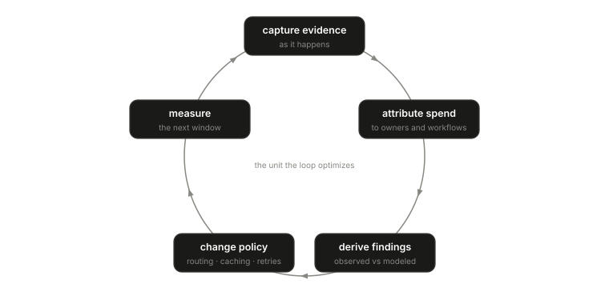

Modern AI infrastructure has three visible pillars. Compute is the execution substrate: providers, models, endpoints, quotas. Data is the context substrate: prompts, indexes, memory, embeddings. Governance is the authority substrate: identity, policy, approvals, audit.
Economics is treated as a reporting concern that sits outside all three. Bills arrive later. Dashboards aggregate usage by account. FinOps reports trend lines and budgets. Those tools operate after the runtime has already made the decisions that created the spend.
That ordering is backwards. The cost of a workflow is created while the workflow runs: when a model is chosen, when a cache lookup misses, when a timeout triggers a retry, when a fallback advances to a more expensive provider, when a branch is abandoned after consuming budget. A system that can choose between models should know the economic effect of the choice. A system that can retry should know whether its retry policy is doubling spend.
Runtime economics is the fourth pillar: the practice of measuring, attributing, and controlling AI cost as part of runtime execution, in the same engineering tier as routing, caching, and resilience. Where Paper 2 defines how a cost claim is proven, this paper defines the operating loop — evidence captured continuously, spend attributed to owners, findings derived, policy changed, and the next window measuring whether the change actually worked. A feedback loop instead of a quarterly spreadsheet.

The loop inherits Volume I’s proof rules. Cost records stay grounded in observed execution. Missing pricing or usage stays unknown rather than zero. Observed results stay separate from modeled opportunities. Dollars link back to the behavior that caused them when evidence supports the relationship, and only then.
Two ideas frame the mature practice:
Every workflow has an economic signature — a repeatable cost shape. Signatures make optimization measurable: a policy change either moved the signature or it did not. They also make drift visible, because a workflow whose cost shape quietly changes is telling you its behavior changed.
The unit that matters is cost per successful workflow, not cost per token. Tokens are one input. Runtime cost is created by model choice, provider price, cache behavior, retry amplification, branch shape, and missing evidence. A team can cut its token price and watch true unit cost rise, because failure loops and retries got cheaper to repeat. Counting tokens without runtime context produces weak economics.
Runtime economics is narrower than business finance — it does not decide whether a feature is worth its cost. It supplies the evidence that lets engineers, FinOps, and leadership make that call with runtime facts instead of allocation guesses.
The full paper
Paper 6 closes Volume I with the operating loop in depth: how continuous capture differs from periodic assessment, how routing, caching, retry, and fallback behavior each show up in the economics, how signatures are used in practice, a worked reference scenario, and failure modes of treating AI cost as a billing problem. The full paper is available to teams we work with — what we publish and what we gate.
Start of the series: Volume I overview.